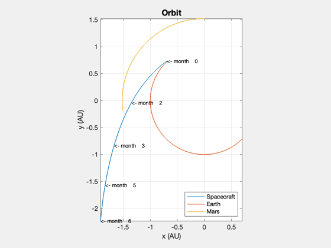
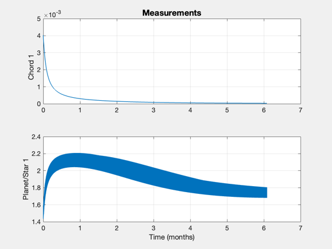
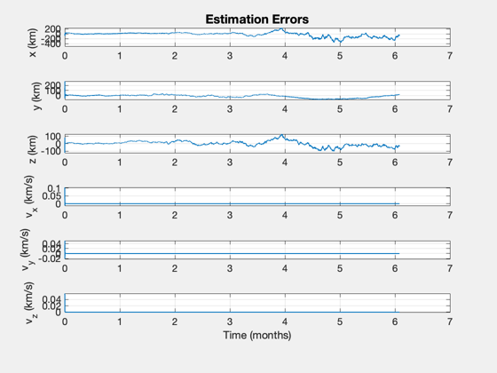

Demonstrate orbit estimation using a UKF and optical navigation.
This tests orbit determination using two planets and a star.
------------------------------------------------------------------------- See also UnitVectorFromOffset, Plot2D, TimeLabl, RK4, Unit, Date2JD, OpticalNavigationMeasurement, UKF, Planets -------------------------------------------------------------------------
Contents
- Select the filter
- Measurement options
- Simulation parameters
- Astronomical unit
- Allocate memory for plotting
- Sun gravitational parameter
- Initial Julian Date
- Parameters for Earth and Mars
- Initial state [r;v]
- Position and velocity uncertainty
- angle between planet 1 and planet 2
- State estimate at start
- Covariance based on the uncertainty
- Measurement parameters that don't change
- Create a time sequence for the x-axis
- Plot
%-------------------------------------------------------------------------- % Copyright 2006, 2009 Princeton Satellite Systems, Inc. % All rights reserved. %-------------------------------------------------------------------------- % Since version 8. %--------------------------------------------------------------------------
Select the filter
%------------------ filter = @UKF; % Full covariance matrix filter
Measurement options
%-------------------- planets = 1; % 1 or 2 starOffset = 8*pi/180;
Simulation parameters
%---------------------- nSim = 8000; dT = 2000; % sec tEnd = nSim*dT;
Astronomical unit
%------------------ au = 149597870; % km/au
Allocate memory for plotting
%----------------------------- if( planets == 2 ) xP = zeros(17,nSim); else xP = zeros(14,nSim); end
Sun gravitational parameter
%----------------------------
mu = 132712438000;
Initial Julian Date
%--------------------
jD0 = Date2JD( [2006 2 1 0 0 0] );
Parameters for Earth and Mars
%------------------------------ thetaE = 2.30768364684019; % Initial orbit angle of the Earth (rad) thetaM = 1.56042659846335; % Initial orbit angle of Mars (rad) omegaE = sqrt(mu/au^3); % Earth orbit rate omegaM = sqrt(mu/(1.52*au)^3); % Mars orbit rate t = linspace(0,tEnd,nSim); a = omegaE*t + thetaE; rE = au*[cos(a);sin(a);zeros(1,nSim)]; % Earth orbit a = omegaM*t + thetaM; rM = 1.52*au*[cos(a);sin(a);zeros(1,nSim)]; % Mars orbit
Initial state [r;v]
%---------------------
x = [rE(:,1) - [3e6;1e6;0];-33;-24;-10];
Position and velocity uncertainty
%---------------------------------- r1Sigma = 100; % km v1Sigma = 0.1; % km/s % Measurement noise % Errors: Earth radius 0.01 km, Mars radius 0.1 km, ephem 2 km % The elements are the noise for the following measurements % chord of planet 1 % angle between star and planet 1 % chord of planet 2 % angle between star and planet 2
angle between planet 1 and planet 2
%-------------------------------------------------------------
sigY = 1e-1*[1e-6;1e-5;1e-6;1e-5;1e-5];
State estimate at start
%------------------------
d.x = x + [r1Sigma*randn(3,1);v1Sigma*randn(3,1)];
Covariance based on the uncertainty
%------------------------------------ d.p = diag([r1Sigma^2*ones(1,3) v1Sigma^2*ones(1,3)]); d.int ='RK4'; d.rHSFun ='RHSOrbitUKF'; d.measFun ='OpticalNavigationMeasurement'; d.integrator = @RK4; d.alpha = 0.8e-3; % UKF spread of sigma points d.kappa = 0; % UKF weighting factor d.beta = 2; % UKF incorporation of a priori knowledge d.dY = (planets - 1)*3 + 2; d.dT = dT; d.rHSFunData = struct('mu',mu,'a',[0;0;0]); d.rM = diag(sigY(1:d.dY).^2); % Measurement noise covariance vecP = [0 0 0 1e-6 1e-6 1e-6]'; d.rP = diag(vecP.^2); % Plant noise covariance d = filter('initialize', d ); t = 0;
Measurement parameters that don't change
%----------------------------------------- clear g g.a1 = 6378; u1 = Unit([0 .1 -0.2;0 -0.3 0.1;1 1 1]); g.u1 = u1(:,1); g.l1 = rE(:,1); j = 1; if( planets == 2 ) g.a2 = 3397; g.u2 = [0;0;1]; g.l2 = rM(:,1); end y = OpticalNavigationMeasurement( x(1:3), g ); for k = 1:nSim % Plotting %--------- xP(:,k) = [d.x; x; y]; % Update the RHS %--------------- x = RK4( d.rHSFun, x, dT, t, d.rHSFunData ) + vecP.*randn(6,1); t = t + dT; % Measurements %------------- g.l1 = rE(:,k); if( planets == 2 ) % Adding 2nd planet measurement g.l2 = rM(:,k); g.u1 = UnitVectorFromOffset( rE(:,k), x(1:3), starOffset ); g.u2 = UnitVectorFromOffset( rM(:,k), x(1:3), starOffset ); else g.u1 = u1(:,j); j = j + 1; if( j > 3 ) j = 1; end end d.measFunData = g; if( planets == 2 ) y = OpticalNavigationMeasurement( x(1:3), g ) + sigY.*randn(5,1); else y = OpticalNavigationMeasurement( x(1:3), g ) + sigY(1:2).*randn(2,1); end % Kalman Filter %-------------- d.t = t; d = filter( 'update', d, y ); end
Create a time sequence for the x-axis
%--------------------------------------
[t,tL,tU] = TimeLabl((0:(nSim-1))*dT);
Plot
%----- yL = {'x (km)' 'y (km)' 'z (km)' 'v_x (km/s)' 'v_y (km/s)' 'v_z (km/s)' }; Plot2D( [xP(7,:); rE(1,:); rM(1,:)]/au, [xP(8,:); rE(2,:); rM(2,:)]/au, 'x (AU)', 'y (AU)', 'Orbit' ); axis image i = floor(linspace(1,nSim,5)); for k = 1:5 text( xP(7,i(k))/au, xP(8,i(k))/au,sprintf('<- %s %4.0f',tU,t(i(k))),'fontsize',9); end legend({'Spacecraft' 'Earth' 'Mars'}, 'location', 'southeast') if( planets == 2 ) yL = {'Chord 1', 'Planet/Star 1', 'Chord 2', 'Planet Star 2',' Planet/Planet'}; Plot2D( t, xP(13:17,:), tL, yL, 'Measurements' ); else yL = {'Chord 1', 'Planet/Star 1'}; Plot2D( t, xP(13:14,:), tL, yL, 'Measurements' ); end err = xP(1:6,:) - xP(7:12,:); yL = {'x (km)' 'y (km)' 'z (km)' 'v_x (km/s)' 'v_y (km/s)' 'v_z (km/s)'}; Plot2D( t, err, tL, yL, 'Estimation Errors' ); %-------------------------------------- % $Date$ % $Id: f2932e9a5ec1309f783e4704aa83756a8e8803ee $  